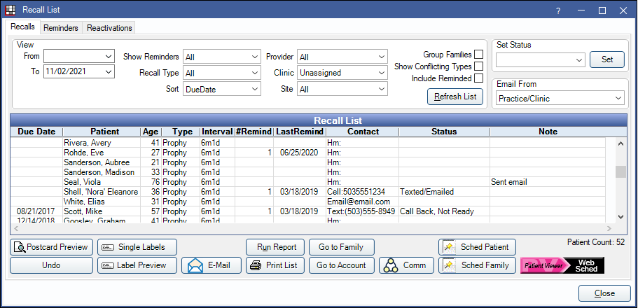
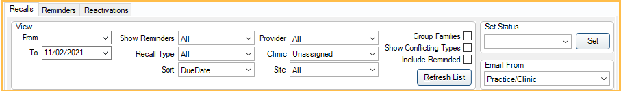

Recall List
Use the Recall List to send and track recall appointment reminders.
In the Appointment Lists, click Recall.
Every active patient appears in the recall list for the default recall types. Once a patient has recall procedures completed, the patient's next recall due date is calculated and the list is updated. As patients are sent a reminder (either automatically or manually from the list), they disappear from the list for a specified number of days. If the patient has not scheduled their appointment before the specified number of days is up, they are put back on the list for another reminder.
- Recall List - Reminders: View patients who have been sent an automatic or manual recall reminder.
- Recall List - Reactivations: View inactive patients who have not been seen recently.
 Also see our Recall Video Playlist
Also see our Recall Video Playlist
Setup
The following must be set up prior to scheduling recall appointments:
- Providers: Add providers and hygienists.
- Operatories: Create operatories and assign the default providers. When using Web Sched, designate Web Sched operatories.
- Schedule Setup: Create each provider's schedule and assign to an operatory. Their schedules should extend as far into the future as appointments are to be scheduled. For example, recall appointments 6 months in the future cannot be scheduled if there is no provider schedule set 6 months out.
- Web Sched Recall: (optional) Sign up for the eService to automatically send text and email reminders to patients. Patients can click a link in these reminders to schedule their recall appointment online.
- Recall Types: Set up recall types. The defaults are Prophy, Child Prophy, and Perio. Edit the recall interval or recall procedures for the existing types or add new ones.
- Setup Recall: Review the Recall List defaults and settings.
Filters
Use the filters to determine which patients display on the list. Patients must meet all criteria entered to display.
View:
- From/To: Display patients whose Recall Due Date falls between these dates. Set the default values in Setup Recall. Leave From blank to include patients who have never had a recall procedure set complete.
- Show Reminders: Only list patients with a specific number of reminders.
- Recall Type: Only show patients with specific recall type. Select from Perio, Prophy, or All.
- Sort: Sort the list by:
- Due Date: Recall due date
- Alphabetically: Alphabetical by last name. Families will sort by the last name of the guarantor even if the guarantor is not in the list.
- Billing type: Patient billing type.
- Provider: Only view patients assigned a specific provider. Search will consider both Primary and Secondary provider assigned in Edit Patient Information.
- Clinic: Filter by patients assigned a specific Clinic.
- Site: Filter by patients assigned a specific Site. Only visible when Public Health is enabled.
- Group Families: Group members together. When checked, and all family members are selected, only one reminder will be sent per family, using the multiple patients in one family message template in Setup Recall.
- Show Conflicting Types: Only show patients whose recall type conflicts with the procedures on a scheduled recall appointment. For example, it will show prophy patients who have a scheduled appointment with perio procedures. Only applies to perio and prophy recalls. To show, the scheduled appointment must have all procedures associated with the conflicting recall type (e.g., a scheduled perio appointment must have all Procedures on Appointment for the perio recall type). See Recall Types.
- Include Reminded: Show patients that have already received reminders, and would otherwise be filtered out according to rules from Setup Recall.
Refresh List: Click to refresh the list based on selected filters.
Set Status: Change the recall status for one or more patients. Highlight one or more patients from the list, select a status from the dropdown, then click Set.
Email From: Select an email address to use for sending email reminders. The default is Practice/Clinic set in Email Setup (for a single practice) or Clinic List (for clinics). If there is no clinic email, the practice default is used.
Recall List Grid
The interactive Recall List grid, shows patients due for a recall and their recall information. Customize which columns show in Display Fields, Recall List.

Columns:
- Due Date: The date the recall type is due. Based off previously completed recall procedures or insurance history. If blank, the patient has never had a recall procedure set complete.
- Patient: Name of the patient with recall due.
- Age: Patient's age.
- Type: Recall type due.
- Interval: The length of time between each recall appointment for the recall type.
- #Remind: The number of reminders sent since the patient's last recall appointment.
- LastRemind: The date the last reminder was sent.
- Contact: Displays the patient's Preferred Recall Method (as set in the Edit Patient Information window). If no preferred method is selected for the patient, Home Phone is the default. Override the preferred recall contact method with the Use email if setting in Setup Recall.
- When Group Families is checked, email addresses listed will be that of the guarantor. Other contact methods will be that of the individual patient.
- Contact abbreviations: Mail = mail postcard, Hm = home phone, Wk = work phone, Cell = wireless, Email address = email, SeeNotes = see notes (commlog or recall note), Text = text message.
- Status: Use to track recall communication about a patient's unscheduled recall appointment. The status can be changed by double-clicking the patient from the list or double-clicking the Recall grid in the Family Module. Status options can be customized in Definitions: Recall / Unsched Status.
- Note: Administrative note specific to recall list. Entries are deleted every time Recall resets.
- WebSched: The progress of a reminder sent using the Web Sched button.
- Progress status: Blank = no web sched recall reminder has been sent, Sending = reminder is being sent, Send Failed = web sched reminder failed to send (double-click to view error details).
Navigation:
- Double-click a patient in the list to open the Edit Recall window.
- Right-click a patient to See Family.
- Right-click a patient to See Account.
- When one family member is highlighted, all other family members in the list will highlight in red text.
Options

- Postcard Preview: Preview postcards to send to the selected patients. See Mail Reminders below for more information.
- Undo: Only available to users with "Security Admin" Permission. Undo the last batch of recalls. Useful when patients were accidentally marked as contacted or the reminders failed to send. The following window will open. Confirm the date to undo recall. Recall notes, statuses, and commlogs will be removed from patient accounts.

- Single Labels: Print a single address label for each selected patient to the default printer for Labels - Single. When printed, the recall status will change to Mailed Postcard.
- Label Preview: Generate and preview a standard sheet of 30 address labels for selected patients. Click Print to print to the default printer for Labels - Sheet. When printed, the recall status will change to Mailed Postcard.
- E-Mail: Email the selected patients. See Email Reminders below for more information.
- Run Report: Click to generate a query of patient information. A window will open with criteria to select from. Useful if doing a Mail Merge in Word to send letters.
- Print List: Print the entire Recall List.
- Go to Family: Select a patient and go to the Family Module.
- Go to Account: Select a patient and go to the Account Module.
- Comm: Create a commlog for each selected patient. Adding a Recall Commlog counts as a reminder and the patient will be removed from the list.
- Sched Patient: Schedule the selected patient's next recall appointment. Patient must be due for a special recall type (e.g., Prophy or Perio).
- An appointment will be created and sent to the Pinboard. Recall procedures that are not attached to a special recall type will be added to appointments automatically along with the special recall if they are due on or before the same date.
- If the schedule is Day View, the Search function will be brought up.
- If the patient's secondary (or primary if no secondary is assigned) provider has openings after the patient's recall due date, the schedule will move to the first date. The search box will show additional available dates.
- Sched Family: Schedule recall appointments for all family members due for a special recall type (e.g., Prophy or Perio). This may include family members not in the current list.
- For each family member due for a special recall type, an appointment will be created and sent to the Pinboard. Recall procedures that are not attached to a special recall type will be added to appointments automatically along with the special recall if they are due on or before the same date.
- If the schedule is Day View, the Search function will be brought up.
- Open Dental will search for openings for all family members' providers starting after the due date for the family member with the furthest out recall due date.
- If there are any available openings after that date, the schedule will move to the first available date. The search box will show additional available dates.
- Web Sched: When using Web Sched Recall, click to send recall reminders. See Web Sched Recall Reminders below for more information.
Reminders
Regardless of which method a reminder was sent to a patient, a commlog will be generated with a type of Recall. Once a commlog has been generated, the patient disappears from the list for a specified number of days (set in Setup Recall). After the specified number of days has past, and if the patient has not scheduled an appointment, they reappear on the list for another attempt. After the maximum number of recall reminders have been sent, the patient will no longer reappear on the list.
To continue sending reminders to patients who have reached the maximum sent, check Include Reminded to populate them on the list.
Web Sched Recall Reminders
When signed up for Web Sched Recall, email and/or text reminders can be sent manually or automatically. The recall reminder includes a link for the patient to schedule their appointment online. See Web Sched Recall to set up Web Sched Recall.
If Web Sched Recall messages have not been sent in three days, an Alert will display.
To manually send Web Sched Recall messages:
- Select patients to send a recall reminder.
- If no patients are manually selected, patients with email or text message as their Preferred Recall Method are automatically selected.
- If Group Families is checked, the guarantor's email/phone is used, even if only one patient from the family is selected.
- Click Web Sched.
- A confirmation message will display. Click OK to send the recall reminders to the Authorized Representatives of the selected patients.
- When multiple family members are sent a web sched recall reminder, the message will be aggregated into one and a commlog will be generated for each patient.
- Only openings available within the next three months are considered. If no openings are available, an alert will appear.
- The selected patients are sent a text message, email, or both, depending on if a valid email address and wireless phone number are entered for the patient.
Also see Web Sched Recall: What Patient Sees.
Automatic Reminders
To send automated text message or email recall reminders without allowing patients to schedule their appointments online, follow the steps below.
- This method uses a portion of the Web Sched Recall system, but does not require the practice to be signed up for that service. The only fees incurred would be for the text messages sent.
- Users will still need to check the recall list periodically, as some patients may not meet the criteria for automated reminders. Users can verify that reminders are going out by looking at the Reminders Tab where the automated reminders sent will show.
- Remove all [URL] and [FamilyListURLs] tags from all Web Sched messages in Recall Setup. Customize the messages to indicate how patients should contact the office to schedule.
- Configure the Recall Types, Send Email Messages Automatically To and Send Text Messages Automatically To options from Web Sched Recall, but do not sign up for the eService.
- Set Start and End times for Automated eServices Schedule from eServices Misc to determine when recall notifications will be sent.
- Wait 10 minutes or restart the eConnector. Verify reminders are sending by going to the Reminders tab in the Recall List.
When automatic reminders are sent, patients are removed from the recall list for the specified number of days. If the patient has not scheduled their appointment before the specified number of days is up, they are put back on the list for another reminder. Because these reminders are automatic, users may not see the patient on the list before their next reminder is sent.
Once the maximum number of automated reminders have been sent for a patient, they must be manually contacted instead. To view patients who need to be contacted manually (e.g., by phone):
- In the Recall List, check Show Reminded.
- Set the Show Reminders dropdown to the maximum number of reminders allowed.
- Users may need to do this for multiple reminder numbers as the patient may have already been manually contacted.
- Click Refresh. Patients who meet the criteria and have had a reminder sent will list.
- Contact the patient and update their recall status.
- The patient is manually marked as reminded (e.g., Mailed Postcard).
- The patient's recall is disabled.
- The patient's phone number or email is updated and they are successfully sent an automatic reminder.
- The patient's recall due date is outside of the default date range.
- Enable Exclude Automated Msgs in Edit Patient Information.
Emailed Reminders
Manually email recall reminders from the recall list. Regular email and text messaging are not secure methods of sending PHI.
- Select an email address to use for sending email in the Email From dropdown menu.
- Select patients to send a recall reminder. If no patients are manually selected, patients with email as their Preferred Recall Method (set in the Edit Patient Information window) are automatically selected.
- Click Email.
- A confirmation message will display. Click OK to send the recall reminders to the selected patients.
- If Group Families is checked, the guarantor email is used, even if only one patient from the family is selected.
- A record of the email is saved to the patient's progress notes.
Phone Reminders
For patients that prefer recall reminders by phone, contact the patient using the phone number listed.
If an appointment is scheduled click Sched Patient or Sched Family. Recall appointments will be created, with recall procedures attached, and placed on the pinboard to be moved to an operatory on the schedule. The calendar will not jump to the recall due date, so remember the appointment due date to locate it on the schedule.
If no appointment is scheduled click Comm to enter a custom note or highlight the patient from the list and select a recall status from the Set Status dropdown that corresponds with the result of the phone call.
Postcard Reminders
For patients that prefer mailed postcard reminders:
- Check Group Families to print one postcard for the entire family.
- Select patients to create a postcard for.
- If no patients are manually selected, every patient who does not have a Preferred Recall Method set, or whose Preferred Recall Method is Mail are automatically selected.
- Click Postcard Preview. A preview of the postcards for all selected patients is generated.
- In the Preview window, click Print to send the postcards to the Default Printer for postcards.
- If the postcards printed successfully, click Yes on the next prompt to finish, otherwise click No to start over.
To customize the wording of Recall Postcards, see Setup Recall.
Troubleshooting
When trying to send Web Sched Recall emails, I receive a message that emails can't be sent because there are no available time slots.
- Verify that all setup options for Web Sched Recall are complete and accurate.
- Verify the provider's schedule extend far enough into the future.
- Verify the operatories are correctly marked as Is Web Sched.
Why might a patient not show in the recall list?
- Patient already has a recall appointment scheduled.
- Patient has already received a reminder. All commlog entries with a type of 'Recall' are considered reminders.
- It has not been long enough since their last reminder.
- The date range does not go back far enough. Leave the start date blank to include patients who have never had a prophy or perio exam.
- The patient may be listed but not sorted as expected. For example, when grouped by family patients are sorted by the last name of guarantor, with associated family members underneath.
- Check that the correct recall types are set to show up in the recall list. See Recall List Setup.
- Patient status must be Patient.
- The patient's recall has been disabled.
- Patient has an appointment that was never marked complete so it is considered scheduled. Check their progress notes to locate it.
Why might patients not be removed from the Recall List even though I have Automatic Reminders turned on?
The Send Text Messages Automatically To and Send Email Messages Automatically To settings may not be enabled in Web Sched Recall.
A Web Sched URL is included in the Automated Reminder but Operatories and schedules are not set up correctly, so there is nowhere to schedule the appointment. If there are no Web Sched Recall openings and there is Web Sched URL in the Automated Reminder, the recall text or email will not go out and the patient will need to be contacted another way.